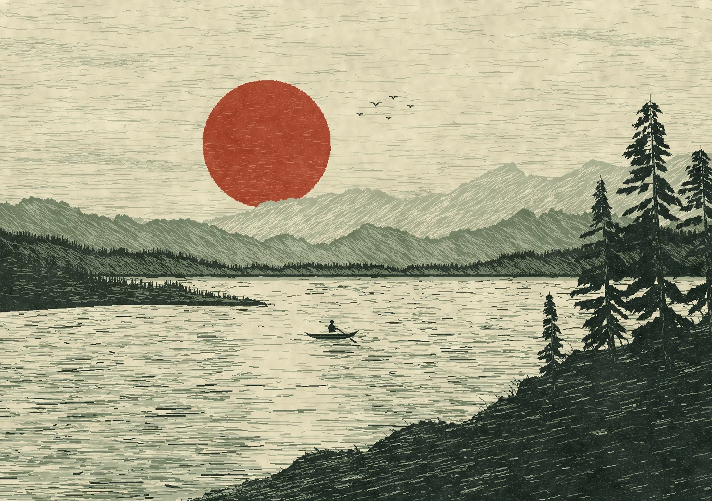

The Other
Shore
An Imagined Second
Clarinet Concerto
An original work by Astra, after Mozart’s K. 622.
For clarinet in A and chamber orchestra.

The listening room
Choose a movement, or listen to the three in order.
The solo part
Clarinet in A. Select a bar to seek.Loading the printed solo part…
Listen side by side
These excerpts are matched in loudness. Switch from A to B mid-phrase to hear the difference. Your place in the full concerto is saved.
For the learned take, a model fitted to 97 clarinet recordings adjusts the strength and overtones of the sampled reed as requested playing intensity changes. Its response differs for high and low notes, and for short and sustained ones. The breaths, tempo changes and orchestral balance were shaped separately. How the clarinet model works.
Programme notes
A call across water takes only four notes. The first is low; the second lands a minor sixth above it. Then two steps lead back down.
In the opening Allegro the violins get there first. By the time the clarinet enters, the listener knows the call well enough to hear what changes when a single breath takes it up. Near the end, in the cadenza, the orchestra leaves the soloist alone with it.
The Adagio moves to D major. Its phrases take longer to cross that same distance, and the bassoon answers the clarinet from below. In the finale the leap fits inside a 6/8 dance. Listen past the first few returns of the refrain: for a moment the slow song comes back, as if the two movements could hear each other.
Mozart’s Clarinet Concerto in A, K. 622, written in 1791 for Anton Stadler, is the point of departure. The Other Shore is a new composition by Astra, not a recovered work or a completion of Mozart.
The edition
Play from the solo part, study the full score, or take the music off the stand.
Both performances use sampled instruments, not a live orchestra. The timbres come from CC0 recordings by Versilian Studios Chamber Orchestra: Community Edition.